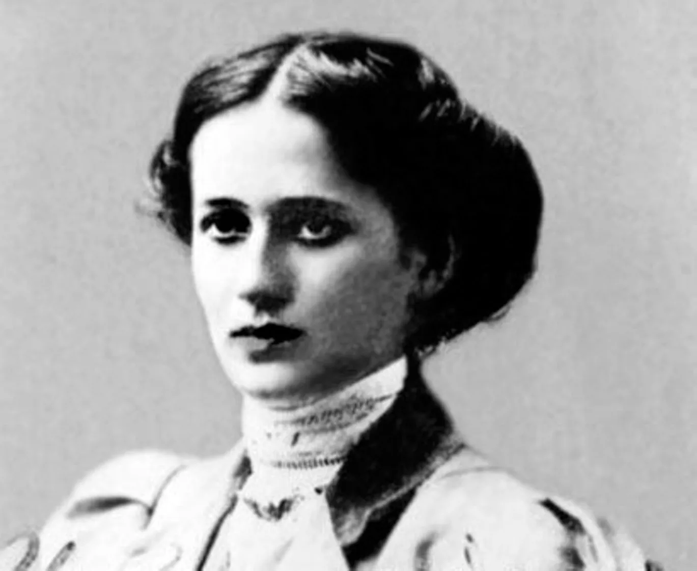
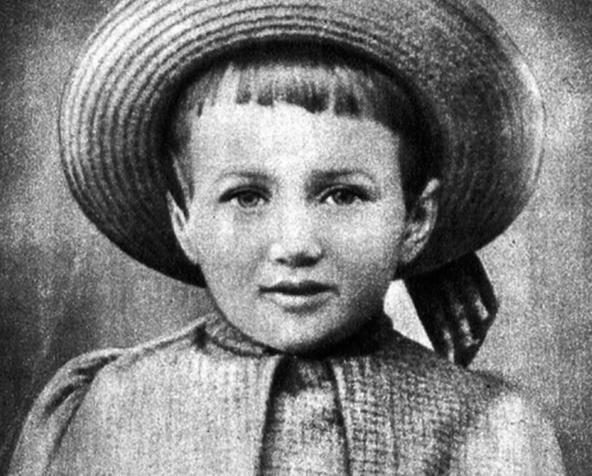

 Анна Ахматова родилась в 1889 году под Одессой в семье потомственного дворянина, отставного инженера-механика флота Андрея Горенко. Отец боялся, что поэтические увлечения дочери опозорят его фамилию, поэтому еще в юном возрасте будущая поэтесса взяла себе творческий псевдоним — Ахматова.  Детство Анны Ахматовой прошло в Царском Селе. Как вспоминала поэтесса, читать она научилась по «Азбуке» Льва Толстого, по-французски заговорила, слушая, как учитель занимался со старшими сестрами. Свое первое стихотворение юная поэтесса написала в 11 лет. Ахматова училась в Царскосельской женской гимназии «сначала плохо, потом гораздо лучше, но всегда неохотно». В 1905 году она была на домашнем обучении. Семья жила в Евпатории — мать Анны Ахматовой рассталась с мужем и уехала к южному побережью лечить обострившийся у детей туберкулез. В следующие годы девочка переехала к родственникам в Киеве — там она окончила Фундуклеевскую гимназию, а затем записалась на юридическое отделение Высших женских курсов.